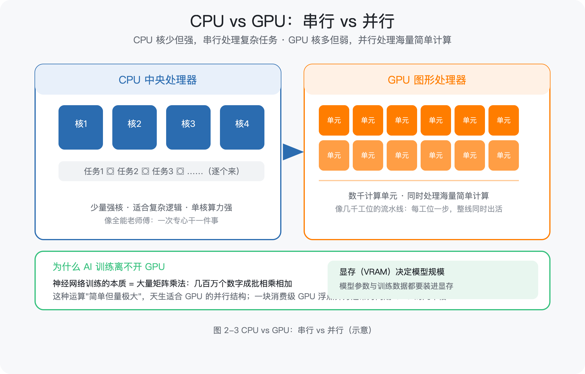

第 2 章 计算机通识：学 AI 前必懂的基础课（L1 计算机世界地图）
所属框架层：L1 编程与软件工程地基 预计篇幅：约 11,000 字（本章无代码门槛，第 3 段为"最小实操示例"） 配套文件：本章配图（SVG 源文件见
figures/ch2/目录）、术语表第 2 章·L1 条目 v1.1 修订：类比降密（只保留少量记忆锚点，以准确语言讲清定义与机制）；内容加深加广（新增 Linux、服务器、GPU 机制、Docker/Kubernetes、环境变量、端口、HTTP 状态码、JSON 等） 本章验收附加：学完后能不看资料回答——命令行是什么？前端和后端各干什么？数据库存什么？部署是做什么的？为什么 AI 训练离不开 GPU 和 Linux？
2.0 本章解决什么问题
这一章解决你的一个具体困境：你打开任何一份 AI 教程，前 20 分钟就会被"打开终端配置环境""装 NVIDIA 驱动""部署到服务器""用 Docker 打包"这些词劝退——不是你不会编程，而是没人给你讲过电脑这台"机器"是怎么运转的，更没人告诉你：AI 的世界里，Linux、GPU、服务器、容器是默认的工作语言。
老张，40 岁，某机械厂的资深工艺工程师。去年他下定决心学 AI，第一周就受了挫：教程让他"用 ssh 连上服务器跑训练"，他不知道服务器在哪、为什么要连；教程说"训练要用 GPU"，他以为 GPU 就是好一点的显卡；让他"把代码打包成 Docker 镜像部署"，他完全不知道镜像是什么。他不是不聪明——他闭着眼睛都能说出车床主轴的三种润滑方式——但计算机世界的名词，对他来说就像一台没有图纸、没有铭牌的陌生设备。
这一章就是那份"设备说明书"。我们不追求让你成为计算机专家，而是用准确的语言把电脑、Linux、网络、服务器、软件这几样东西讲清楚，让你建立"原生计算机素养"：知道每个概念是什么、为什么存在、解决什么问题。学完这一章，后面每一章提到 GPU、Linux、命令行、数据库、Docker、部署时，你都不会再犯怵。
本章配图清单（图号 / 内容 / 对应小节 / 类型）
| 图号 | 内容 | 对应小节 | 类型 |
|---|---|---|---|
| 图 2-1 | 计算机世界地图（六层总览） | 2.1 / 2.10 | 架构图 |
| 图 2-2 | Linux 工作台：文件系统与命令 | 2.2 | 示意图 |
| 图 2-3 | CPU vs GPU：串行 vs 并行 | 2.1 | 对比图 |
| 图 2-4 | 网页请求旅程（浏览器→DNS→服务器→数据库→返回） | 2.3 | 流程图 |
| 图 2-5 | 前端与后端（含 API 与 JSON） | 2.4 | 架构图 |
| 图 2-6 | UI 与 UX 的关系 | 2.5 | 示意图 |
| 图 2-7 | 数据库：表、索引、事务 | 2.6 | 示意图 |
| 图 2-8 | Docker 与 Kubernetes：容器与编排 | 2.8 | 架构图 |
| 图 2-9 | 软件工程流程全景 | 2.9 | 流程图 |
| 图 2-10 | 部署：本地 → 云服务器 → 容器化集群 | 2.8 | 示意图 |
2.1 计算机是怎么工作的：硬件与软件
2.1.1 CPU 到底在干什么
中央处理器（Central Processing Unit，CPU）是计算机的运算核心。它做的事情极其简单，但速度极快：读取一条指令 → 执行它 → 读取下一条，如此循环。指令是"把这两个数相加""把这块数据搬到那里"这类最基础的操作。
三个关键概念，先建立"原生认知"：
- 时钟（Clock）：CPU 内部有一个节拍器，每"滴答"一次执行一步。3.0 GHz 的意思就是每秒滴答 30 亿次。频率越高，同样时间内能执行的指令越多。
- 寄存器（Register）：CPU 内部的一小块超高速存储，存放正在处理的数。它比内存快得多，但容量极小。
- 指令集（Instruction Set）：CPU 认识的全部"动作清单"。不同品牌（Intel、AMD、ARM）的 CPU 各有各的清单，就像不同系统的数控机床指令格式不同。
你不需要会写汇编，但知道"CPU = 按节拍逐条执行指令的部件"，后面理解"为什么代码要经过编译/解释"就顺理成章了（见 2.9 节）。
2.1.2 内存与硬盘：两种存储的分工
计算机有两类存储，初学者最容易混：
- 内存（Memory，RAM）：与 CPU 直接交换数据的存储，速度快、容量小、断电即失。它保存的是"正在处理的"数据。
- 硬盘（Disk，存储）：长期保存数据，速度慢、容量大、断电不丢。它保存的是"要长期留着的"数据。
两者关系用一句话讲清楚：CPU 只跟内存打交道，硬盘里的数据要先"搬到"内存才能被 CPU 处理。你打开一个 1 万行的 Excel 表格，Excel 把它从硬盘读进内存，然后你的一切操作都在内存里进行——没保存就断电，等于白干。所以"保存"这个动作的本质是：把内存里的最新数据写回硬盘。
如果需要一个记忆锚点：内存像工作台，硬盘像仓库。工作台的东西关机就清空，仓库的东西断电还在。
2.1.3 GPU 与 AI：为什么训练模型离不开它
图形处理器（Graphics Processing Unit，GPU）最初是为了渲染 3D 画面设计的，但 AI 行业发现它是训练神经网络的最佳工具。原因在并行计算：
- CPU 有 8 核、16 核，每个核很强，适合"串行"地逐条处理复杂任务——像一个全能老师傅，一次专心干一件事，干得又快又好。
- GPU 有数千个计算单元，单个单元很弱，但可以同时做海量简单计算——像一条有几千个工位的流水线，每个工位只做一步简单操作，但整条线同时产出大量结果。
神经网络训练的本质是大量矩阵乘法：几百万个数字成批相乘相加。这种运算"简单但量极大"，天生适合 GPU 的并行结构。一个直观数据：一块消费级 GPU 的浮点算力通常是同期 CPU 的几十倍。
另一个必须知道的概念是显存（VRAM）：GPU 自带的高速内存。模型参数、训练数据都要装进显存才能被 GPU 计算。显存容量决定了你能训练多大的模型——这也是为什么大模型训练要用多张 GPU 组成集群（见 2.3 节）。
AI 实践中最常见的 GPU 名词：NVIDIA 的 CUDA（GPU 的编程接口）、显存 8G/24G/80G（决定模型规模）、GPU 服务器（多卡集群，按小时租赁）。第 9 章讲私有化部署时会再算这笔账。

2.1.4 操作系统：硬件之上的"管理者"
操作系统（Operating System，OS）是运行在硬件之上的基础软件，管理所有硬件资源并为应用程序提供服务。它干四类活：
- 进程与线程管理：进程（Process）是一个正在运行的程序（如"你打开的 Excel"），线程（Thread）是进程内的执行单元（如"Excel 同时做计算和界面刷新"）。操作系统负责给每个进程分配 CPU 时间、内存空间，并保证它们互不干扰。
- 内存管理：给每个进程划分独立的内存区域，防止一个程序崩溃拖垮整个系统。
- 文件系统：把硬盘组织成"目录（文件夹）+ 文件"的层级结构，并记录每个文件在哪。文件系统结构是理解路径的前提（见 2.2 节）。
- 权限管理：规定谁能读、谁能在哪个目录写、谁能安装软件。工业场景里"操作工只能动自己工位、车间主任才能改排产"就是权限的日常版。
Windows、macOS、Linux 都是操作系统。你在个人电脑上用 Windows 或 macOS，但学 AI 时你会频繁接触 Linux——原因见下一节。
2.1.5 数据在电脑里怎么存：二进制与编码
电脑里一切数据最终都是二进制（0 和 1）。一个 0 或 1 叫一个比特（bit），8 个比特组成一个字节（Byte），是存储的基本单位（1KB = 1024 字节，一张照片约 2–5MB）。
文本是怎么变成 0/1 的？靠字符编码：每个字符对应一个编号。现代世界统一的编码是 UTF-8——它兼容 ASCII（英文/数字/符号），又能表示全世界所有文字（包括中文）。"机械"两个字在 UTF-8 下各占 3 个字节。为什么工程师要知道这个？因为 AI 处理文本、代码文件乱码、数据库存储中文字段，都跟编码有关——遇到"打开文件全是乱码"时，先查编码。
另一种必须认识的数据格式是 JSON（JavaScript Object Notation，一种轻量级数据交换格式）：用"键: 值"的文本方式表示结构化数据。它几乎成了程序之间传数据的"普通话"：
JSON 是人类可读的，机器也好解析。2.4 节讲 API 时会频繁见到它。
2.2 Linux 系统与命令行：AI 工程师的工作台
2.2.1 为什么 AI 的世界几乎都在 Linux 上
这是本章最重要的"为什么"。原因有三个：
- 服务器生态：AI 训练和推理跑在服务器上，而互联网服务器 90% 以上运行 Linux。你租的云服务器、企业的 GPU 服务器，几乎都是 Linux。
- GPU 驱动与工具链：NVIDIA 的 CUDA 工具链、PyTorch、TensorFlow 等 AI 框架，最先、最完整支持的平台就是 Linux。
- 开源与可定制：Linux 完全开源，可裁剪、可定制，适合构建从嵌入式到超算的各种环境。
一句话：你不一定要在个人电脑上装 Linux，但你学的 AI 知识最终都要跑在 Linux 服务器上。所以至少要会用 Linux 的命令行——这不是"程序员的高深爱好"，而是 AI 实践的基本功。
2.2.2 Linux 与 Windows/macOS 有什么不同
| 维度 | Windows / macOS | Linux |
|---|---|---|
| 开发来源 | 商业公司闭源开发 | 开源社区协作开发 |
| 操作方式 | 图形界面为主，命令行为辅 | 命令行为主（服务器版甚至没有图形界面） |
| 常见发行版 | — | Ubuntu、Debian、CentOS、Rocky Linux 等 |
| 使用场景 | 个人办公、日常使用 | 服务器、云计算、AI 训练、嵌入式 |
| 文件路径写法 | C:\Users\... / /Users/... |
/home/用户名/...（一切从根目录 / 开始） |
macOS 的底层也是类 Unix 系统，所以你在 macOS 的"终端"里学的命令，在 Linux 上几乎完全通用——这对你来说是个好消息。
2.2.3 终端与 Shell：命令行的两个概念
- 终端（Terminal）：一个窗口程序，让你输入命令并看到输出。它本身不执行命令，只是"显示器 + 键盘"。
- Shell：真正解释和执行命令的程序。常见的有 bash、zsh。你输入
ls，Shell 找到并执行ls这个程序，把结果交给终端显示。
命令行（Command Line Interface，CLI）就是用文本命令操作电脑的方式。为什么程序员爱用它？三个实际理由：可复制（一条命令发给同事就能复现）、可组合（命令可以管道连接，如 ps | grep python 表示"列出进程，筛出 python"）、可脚本化（把多条命令写进文件自动执行）。
2.2.4 Linux 文件系统：先看懂树状结构
Linux 的一切文件都从根目录 / 开始，是一棵倒挂的树。几个你必须知道的目录：
| 目录 | 存什么 |
|---|---|
/ |
根目录，树的起点 |
/home/用户名 |
你的个人目录（相当于 Windows 的用户文件夹） |
/etc |
系统配置文件（相当于"设备参数表"） |
/var |
经常变化的文件：日志、缓存（相当于"运行记录"） |
/tmp |
临时文件 |
/usr |
系统安装的软件 |
路径就是"从根到目标的路线"：绝对路径从 / 开始（/home/laozhang/projects），相对路径从当前位置开始（projects/，前面没有斜杠）。终端里 ~ 是"我的个人目录"的缩写，. 是当前目录，.. 是上一级目录。
2.2.5 工程师命令集（先会用，再理解）
下面的命令是 AI 实践中最高频的，每个后面都说明它实际干什么：
| 命令 | 干什么 |
|---|---|
pwd |
显示当前所在目录 |
ls / ls -la |
列出当前目录内容 / 列出详细信息（含权限、大小） |
cd 目录 |
进入某个目录 |
mkdir 名称 |
新建目录 |
cp 源 目标 / mv 源 目标 |
复制 / 移动或重命名 |
cat 文件 |
把文件内容打印到终端 |
chmod 权限 文件 |
修改文件权限（如 chmod +x run.sh 给脚本加执行权限） |
ps / top |
查看正在运行的进程 / 实时查看资源占用 |
curl 网址 |
向网址发送网络请求（2.3 节会实测） |
ssh 用户@主机 |
远程登录另一台电脑（2.3 节讲） |
git clone 网址 |
把网上的代码仓库复制到本地 |
pip install 包名 |
安装 Python 库 |
sudo 命令 |
以管理员权限执行命令（类比：需要车间主任签字） |
命令记不住很正常，你不需要背——理解每个命令在"电脑里实际做什么"，比背命令本身重要。后面所有章节用到时都会再出现。
2.2.6 环境变量与 PATH
环境变量（Environment Variable）是操作系统和程序共享的一组"全局参数"，每个变量是一个"名字=值"的键值对。最常见的 PATH 变量存的是"可执行程序所在的目录列表"：你输入 python3，系统按 PATH 里的目录顺序去找名为 python3 的程序，找到就执行。
为什么工程师必须懂环境变量？三个实际场景：
- 安装软件后提示"命令找不到"——通常是该软件的目录没加进 PATH。
- AI 项目里，API 密钥、数据库地址等敏感配置通常放在
.env文件里，程序启动时读为环境变量（比写死在代码里安全）。 - 切换 Python 版本、配置 CUDA 路径，本质都是在改环境变量。
查看环境变量的命令是 echo $PATH（输出 PATH 的值）。第 3 章配置 Python 环境时会实际用到。
2.2.7 包管理器：apt、pip、conda 的分工
包管理器（Package Manager）是自动下载、安装、管理软件依赖的工具。Linux 生态有三个层次，分工不同：
- apt（Ubuntu 等发行版自带）：管理系统级软件（如安装 nginx、git）。类比：从"系统标准件库"领件。
- pip：安装 Python 库（如
pip install pandas）。类比：从"Python 专用零件库"领件。 - conda：同时管理 Python 版本和库，且能创建互相隔离的"环境"（Environment）——每个环境有自己的 Python 和依赖版本。类比：为不同项目各配一套独立的工具箱。
为什么需要隔离环境？ 项目 A 需要 pandas 2.0，项目 B 需要 pandas 1.5——如果装在一个环境里会互相打架。conda 虚拟环境让每个项目有自己的工具箱，互不干扰。第 3 章你会亲手创建第一个虚拟环境。

2.3 服务器与网络
2.3.1 服务器是什么
服务器（Server）本质是一台电脑，但它与个人电脑有三点不同：
- 7×24 小时运行：设计上就是不停机的（冗余电源、冗余硬盘）。
- 没有显示器键盘：服务器版系统只有命令行，人靠远程登录操作。
- 按用途分工：有的存数据（数据库服务器），有的跑计算（GPU 训练服务器），有的对外提供网页（Web 服务器）。
当多台服务器一起干活、对外像一台机器时，叫集群（Cluster）。大模型训练就是上百台 GPU 服务器组成集群，用高速网络连起来协同计算。
2.3.2 IP、端口、域名、DNS
一台电脑要访问另一台，靠三个概念：
- IP 地址：每台联网设备的门牌号，如
192.168.1.100。 - 端口（Port）：一台机器上"具体的服务入口"。IP 找到机器，端口找到这台机器上的哪个服务。类比：门牌号找到公司，部门分机号找到具体的人。HTTP 服务默认端口是 80，HTTPS 是 443，数据库 MySQL 是 3306。
- 域名与 DNS：记 IP 很难受，于是用域名（
example.com）代替。DNS（域名系统）负责把域名翻译成 IP——类比"公司名查号台"。
一条命令就能查 DNS：nslookup example.com 会返回它的 IP。你可以试试，会发现"www.baidu.com"背后其实有好几个 IP——这是负载均衡（见 2.7 节）的体现。
2.3.3 HTTP/HTTPS：请求与响应
超文本传输协议（HyperText Transfer Protocol，HTTP）是浏览器（客户端）与服务器之间通信的规则。核心模型是请求-响应：
- 客户端发一个请求：包含方法（Method）、地址（URL）、请求头（Header，如浏览器类型、认证信息）、可选请求体（Body，如表单数据）。
- 服务器回一个响应：包含状态码（Status Code）、响应头、响应体（Body，通常是 HTML 或 JSON）。
HTTP 方法就几种，记住常用的：GET（取数据，不改变服务器状态）、POST（提交数据，如提交表单）、PUT/DELETE（更新/删除）。类比：GET 是"查台账"，POST 是"登记新记录"。
HTTP 状态码是服务器给客户的"一句话回执"，必须认识这几类：
| 状态码 | 含义 | 工程师视角 |
|---|---|---|
| 200 | 成功 | 请求处理完毕，正常返回 |
| 301/302 | 重定向 | 内容搬走了，去新地址 |
| 404 | 找不到 | 地址写错或资源不存在 |
| 500 | 服务器内部错误 | 服务器自己出问题了 |
| 403 | 没有权限 | 有地址但没权限访问 |
HTTPS 是 HTTP 的加密版本：传输内容加密（相当于单据套了密封信封），防止中途被窃听或篡改。凡是要输入账号密码的网站，地址栏必须是 https://。
2.3.4 一次网页请求的旅程
你在浏览器输入 https://example.com，背后发生的事（图 2-4）：

- 浏览器先查 DNS："example.com 的 IP 是多少？"
- DNS 返回 IP（如
93.184.216.34）。 - 浏览器向该 IP 的 443 端口发一个 HTTPS 请求（GET）。
- 服务器收到请求，可能需要去数据库查数据（见 2.6 节）。
- 服务器把结果打包成响应（状态码 200 + HTML/JSON 内容）。
- 浏览器拿到响应，解析并渲染成你看到的页面。
一次网页请求，就是一趟"查询-回传"的完整流程。2.10 节你会用 curl 亲手看到这个过程的原始形态。
2.3.5 SSH：远程操作服务器的标准方式
SSH（Secure Shell，安全外壳协议）是远程登录另一台电脑的命令行协议，AI 实践中最常用的操作方式——你租了一台云服务器，就是用 SSH 登录去配置它：
连接后，你的终端就变成了那台服务器的终端，可以执行命令、传文件（scp）、跑训练。SSH 的"安全"体现在加密传输和密钥认证：生产环境用密钥对（公钥放服务器、私钥留本地）代替密码登录，更安全。2.10 节的实操会演示怎么用 SSH 连一个本地环境。
2.4 前端与后端：软件的一体两面
2.4.1 浏览器如何工作
浏览器（Browser）是运行网页的程序。它做的事情可以概括为：拉取资源（HTML/CSS/JS/图片）→ 解析 → 渲染成可视页面 → 响应你的操作。你在地址栏输入网址，浏览器就是那个发起 HTTP 请求、接收响应、把代码"画"成页面的角色。
浏览器的核心工作包括：解析 HTML 生成页面结构（DOM）、解析 CSS 计算样式、执行 JavaScript 处理交互。一个现代网页，本质是"内容结构 + 样式 + 行为"三部分的组合。
2.4.2 HTML、CSS、JavaScript：网页的三层
| 技术 | 全称 | 负责什么 | 特点 |
|---|---|---|---|
| HTML | 超文本标记语言 | 页面内容的结构（标题、段落、表格、图片） | 描述"有什么" |
| CSS | 层叠样式表 | 页面的外观（颜色、字体、布局） | 描述"长什么样" |
| JavaScript（JS） | — | 页面的行为（点击响应、数据更新、动画） | 描述"怎么动" |
三者的关系一句话：HTML 定义内容结构，CSS 定义外观，JavaScript 定义行为。后面第 6 章你用 AI 生成网页工具时，实际就是在生成这三层代码。
2.4.3 API 与 JSON：前端怎么向后端要数据
前端（Frontend）：运行在用户浏览器里的部分——用户看得见、点得动的界面。后端（Backend）：运行在服务器上的部分——处理业务逻辑、读写数据库。两者不在同一台机器上，怎么通信？靠 API。
应用程序接口（Application Programming Interface，API）是程序之间约定的通信方式。Web 领域最常见的是 REST API：后端把每个"能力"定义成一个 URL + 方法（如 GET /api/devices 表示"获取设备列表"），前端发请求、后端回 JSON。一次典型对话：
如果需要一个记忆锚点：前端是用户看到的"操作面板"，后端是藏在服务器上的"控制柜"，API 是两者之间约定好的标准接口。第 6 章调用大模型 API，就是"前端/脚本向后端发请求、收 JSON"这个模式的直接应用。
2.4.4 Qt 是什么（工业软件里的"前端"）
Qt 是一套跨平台桌面软件界面框架——用 C++/Python 等语言快速搭建 Windows、Linux、macOS 都能运行的桌面程序界面。工业软件（数控系统、仿真软件、上位机、SCADA 组态）大量使用 Qt，这是工程师最容易直接接触到的"前端"技术。
和网页前端的区别：网页前端运行在浏览器里（需要浏览器这个"运行环境"），Qt 程序是独立运行的桌面应用（自带窗口，不需要浏览器）。但两者做的事本质相同：都负责"用户看到的界面 + 用户操作的响应"。学完 2.4 节，你再看 Qt 相关的招聘要求或软件文档，就不会觉得陌生了。

2.5 UI 与 UX：好看与好用
- UI（User Interface，用户界面）：界面的视觉设计——布局、颜色、按钮大小、图标。回答"界面长什么样"。
- UX（User Experience，用户体验）：使用过程的整体体验——顺不顺手、容不容易误操作、新用户多久能上手。回答"界面好不好用"。
两者的关系：UI 是 UX 的一部分。界面好看但操作别扭（急停按钮藏在角落），UX 差；操作合理但界面混乱没人愿意用，UI 拖后腿。
工程师为什么也要懂一点 UI/UX？因为你做的 AI 工具最终要给别人用。判断标准很简单：UI 决定用户第一印象，UX 决定用户是否真的用下去。第 11 章讲"把工具做成别人愿意用的产品"时会展开。现阶段记住"先保证好用（UX），再追求好看（UI）"就够。

2.6 数据库：软件的记忆库
2.6.1 关系型数据库与 SQL
数据库（Database）是结构化存储和管理数据的软件系统。最主流的是关系型数据库（Relational Database）：数据存成"表（Table）"，表有行（一条记录）和列（一个字段），表与表之间用主键/外键关联。典型：MySQL、PostgreSQL。
| 概念 | 是什么 | 对应你熟悉的东西 |
|---|---|---|
| 表（Table） | 一类数据的集合 | 一张台账表 |
| 行（Row） | 一条记录 | 台账里的一行 |
| 列（Column） | 一个字段 | 台账里的一列 |
| 主键（Primary Key） | 唯一标识一条记录的字段 | 设备编号（不重复） |
| 外键（Foreign Key） | 指向另一张表的字段 | "车间编号"指向车间表 |
操作数据库的语言是 SQL（结构化查询语言）。几个最常用的语句：
-- 查询：把 2025 年 3 月入库、材质含 45 钢的零件列出来
SELECT 零件号, 名称 FROM 零件表
WHERE 入库日期 BETWEEN '2025-03-01' AND '2025-03-31'
AND 材质 LIKE '%45钢%';
-- 新增一条记录
INSERT INTO 零件表 (零件号, 名称) VALUES ('P-1001', '传动轴');
-- 更新
UPDATE 零件表 SET 状态 = '已领用' WHERE 零件号 = 'P-1001';
SQL 值得学，因为它是"和数据库说话"的标准语言，AI 项目里做数据准备（第 4、10 章）会反复用到。
2.6.2 事务与索引：数据库为什么可靠又快速
两个概念级认知，帮你理解数据库的工程价值：
- 事务（Transaction）：把一组操作打包成一个"要么全部成功、要么全部回滚"的整体。比如"转账 = 扣钱 + 加钱"，中途任何一步失败，整体回滚，账不会对不上。数据库通过事务保证数据一致性（ACID 原则）。
- 索引（Index）：数据库为某列建立的"查账目录"，让查询从"逐行翻台账"变成"按目录直接定位"，速度提升几个数量级。代价是索引占用存储、写入变慢。给哪些列建索引，是数据库优化的核心工作。
2.6.3 非关系型数据库与向量数据库
非关系型数据库（NoSQL）不要求固定表格结构，适合海量、多样、变化快的数据（典型：MongoDB、Redis——Redis 常作缓存，见 2.7 节）。
AI 世界里还有一类必须提前认识的：向量数据库（Vector Database）。它存储的是数据的"向量表示"（一组数字坐标），支持按"相似度"检索——本质是"语义上最接近的内容"。第 7 章做企业知识库问答（RAG）时，它就是检索的核心部件。这里只需知道：AI 应用离不开数据存储，既有传统的关系型数据库，也有为 AI 设计的向量数据库。

2.7 架构：把系统搭得像车间产线
2.7.1 架构是什么，为什么要先规划
架构（Architecture）是软件系统的整体结构与模块划分：有哪些模块、模块之间怎么连接、数据怎么流动。就像车间要先做布局规划再进设备，软件不规划架构就开写，等于不画车间布局图就进场装设备——初期很爽，后期返工。
2.7.2 怎么看一张架构图
架构图就是"系统布局图"：方框 = 模块/服务，箭头 = 数据流/调用关系。拿到任何一张架构图，只问三个问题：
- 有哪些模块（方框）？
- 模块之间传什么（箭头上的标签）？
- 数据从哪进、从哪出（边界在哪）？
看懂这三个问题，你就能读懂绝大多数 AI 方案的架构图——这是"看得懂 AI 方案"能力的第一步。
2.7.3 分层架构与单体/微服务
最常见的架构是三层分层：前端（界面层）→ 后端（业务逻辑层）→ 数据库（数据层）。数据单向流动：前端请求 → 后端处理 → 数据库存取 → 结果返回前端。
单体架构（Monolithic）：所有功能在一个程序里，像一条大产线——简单好管，但一处改动影响全局、扩充困难。微服务（Microservices）：拆成多个独立服务，各自部署、独立升级，像多条专业化产线——灵活可扩展，但协调与运维复杂（这正是 Kubernetes 要解决的问题，见 2.8 节）。
2.7.4 高可用与负载均衡（概念级）
大型系统要解决两个现实问题：
- 负载均衡（Load Balancing）：一台服务器扛不住所有请求，于是前面放一个"调度员"（如 Nginx），把请求分发给多台服务器。这也是
www.baidu.com背后有多个 IP 的原因。 - 高可用（High Availability）：单台服务器会坏，于是同一服务部署多份，一台故障自动切换。用"冗余"换"可靠"，和数控机床配双回路一个道理。
这两个概念是"生产级系统"的标志，第 9 章部署 AI 服务时会再见到。
2.8 容器与部署：从"自己电脑能跑"到"全世界能用"
2.8.1 部署是什么
部署（Deployment）是把软件安装配置到运行环境、并让它正式运行起来的过程。你写的程序在自己电脑能跑，只等于"车间试制成功"；要让别人都能用，需要放到一台 7×24 运行的机器上、配好环境、接好网络——这一整套动作就是部署。"本地能跑"和"正式可用"之间，隔着一个部署。
运行环境分两类：本地/内网（自己电脑或企业内网）和云服务器（租云厂商的机器，阿里云、腾讯云、AWS 等）。云服务的分层概念：
| 缩写 | 全称 | 你得到什么 | 类比 |
|---|---|---|---|
| IaaS | 基础设施即服务 | 一台裸的服务器（CPU/内存/硬盘） | 租一间空厂房 |
| PaaS | 平台即服务 | 服务器 + 运行环境（数据库等） | 租厂房 + 装好水电 |
| SaaS | 软件即服务 | 直接可用的软件 | 直接租用整条产线 |
2.8.2 Docker：把环境一起打包
程序员最经典的问题："在我电脑上明明能跑，到你电脑上就报错。"原因通常是环境不一致：依赖库版本、系统配置、路径不同。
Docker 的解决方案：把"软件 + 它的运行环境（依赖库、配置、系统文件）"打包成一个标准单元。两个核心概念：
- 镜像（Image）：打包好的"只读模板"，包含全部环境——类比：刻好盘的整套设备 + 工装 + 参数设置。
- 容器（Container）：镜像运行起来的实例——类比：用这套模板开出的、正在运行的一台设备。同一镜像可以开出任意多个容器。
打包方式写在一个叫 Dockerfile 的文本文件里（内容是"从什么基础镜像开始、装什么、拷什么、启动什么"），构建一次镜像，到处运行。多个容器要一起跑（如"网页服务 + 数据库"），用 Docker Compose 一个命令全部启动。
如果需要一个记忆锚点：Docker 容器像标准集装箱——设备连同工装打包运输，到哪个码头都能直接卸下来用。它解决的核心问题是"环境一致性"。
2.8.3 Kubernetes（K8s）：容器多了谁来管
容器解决了"单台机器上的环境一致性"，但生产环境里容器有成百上千个，分布在几十台服务器上，又出现新问题：容器挂了一个谁来重启？流量怎么分配给各容器？服务器坏了容器怎么迁移？——这叫容器编排（Orchestration）。
Kubernetes（简称 K8s，读作"kube-eights"）是事实标准的容器编排平台。四个核心概念，概念级理解即可：
| 概念 | 是什么 |
|---|---|
| 节点（Node） | 集群里的一台服务器（物理机或虚拟机） |
| 集群（Cluster） | 一组节点组成的一个整体，对外像一台超级计算机 |
| Pod | K8s 里最小的运行单元（一个或多个容器装在一起） |
| Deployment | 声明"我要跑几个 Pod"，K8s 自动维持这个数量 |
K8s 的核心能力一句话：你告诉它"我要运行 3 个这种容器"，它负责在集群里调度、维持、自动重启、自动扩容。就像车间的中央调度系统：你只管下工单，它管排产、看机、换刀、报警。
对工程师的实际意义：第 9 章私有化部署 AI 服务时，小规模用 Docker 就够；企业级、多服务、要扩缩容时，才需要 K8s。先知道"容器管一台，K8s 管一群"就够了。

2.8.4 CI/CD：自动化的交付流水线
CI/CD 是软件交付的自动化流水线：
- CI（持续集成）：代码一提交，自动编译 + 自动跑测试——有问题立刻发现，不让坏代码积累。
- CD（持续部署）：测试通过后，自动构建镜像、自动部署上线。
类比：自动化的装配-检验-发货线——代码提交是"零件到位"，测试是"质检"，部署是"发货"。人工参与越少，交付越快越稳。第 3 章学 Git 后，你会第一次体验"提交代码触发自动化检查"。

2.9 软件是怎么造出来的：工程流程全景
2.9.1 六个阶段
软件工程（Software Engineering）的完整流程，类比一个产品从需求到持续改进的生命周期（图 2-9）：

| 阶段 | 干什么 | 产物 | 你要知道的 |
|---|---|---|---|
| 需求 | 明确要解决什么问题 | PRD（产品需求文档） | 设计任务书 |
| 设计 | 规划怎么实现 | 架构图、接口设计 | 总体方案 |
| 开发 | 写代码 | 代码 | 制造装配 |
| 测试 | 验证功能与质量 | 测试报告 | 质检 / 出厂试验 |
| 上线 | 部署发布 | 正式运行的服务 | 交付投产 |
| 迭代 | 收集反馈、持续改进 | 新版本 | 持续改进 |
软件工程不是什么神秘学科，它就是工程管理在软件上的翻版。你的流程思维（PDCA、质量控制、文档管理）几乎可以平移过来——这是工程师学软件的巨大优势。
2.9.2 三个必须认识的工程概念
- MVP（最小可行产品）：先做功能最简、但能验证需求是否成立的版本，再迭代。类比：先做一台能加工一件零件的验证机，确认方案可行，再考虑量产线。
- Git 版本管理：代码的"图纸版本管理"——每次改动留版本、可回退、可多人协作（分支/合并）。第 3 章会实际用起来。
- 编译器与解释器：代码要变成机器能执行的指令，需要翻译。编译器（如 C++）把整个程序一次性翻译成机器码再运行；解释器（如 Python）边翻译边执行。这也是为什么 Python 代码要"运行"（解释器执行）而 C++ 要"编译"（生成可执行文件）。Python 是 AI 世界的主力语言，因为它开发效率高、生态完善——代价是执行速度比编译型慢，但在 AI 场景里通常不是瓶颈。
2.10 本章地图与练习
2.10.1 一张"学 AI 前的计算机世界地图"
把全章收成一张图（图 2-1），六层，从底到顶：
第6层 软件工程：需求→设计→开发→测试→上线→迭代（PRD/MVP/Git/CI-CD）
第5层 容器与部署：云服务器（IaaS/PaaS/SaaS）· Docker（镜像/容器）· Kubernetes（编排）
第4层 软件应用：前端/后端/API/JSON · 数据库（SQL/事务/索引）· 架构（分层/微服务）
第3层 服务器与网络：服务器/集群 · IP/端口/DNS · HTTP（方法/状态码）· SSH
第2层 Linux 与命令行：终端/Shell · 文件系统 · 命令集 · 环境变量/PATH · 包管理器
第1层 硬件：CPU（指令/时钟）· 内存/硬盘 · GPU（并行/显存）· 操作系统（进程/权限）

以后遇到任何不懂的计算机词，先问自己：它在这张地图的哪一层、解决什么问题？——这就是老张的"地图思维"。
2.10.2 最小实操示例：30 分钟在命令行里走通一圈
实操 A：Linux 命令集走一遍（macOS 终端或 Windows 的 WSL 均可，命令通用）：
# 本段做什么：建目录、查看内容、看进程——感受命令行的节奏
cd ~ # 回到个人目录
mkdir ai-learning # 新建项目目录
cd ai-learning # 进入它
pwd # 确认当前路径
ls -la # 列出内容（含隐藏文件，此刻应该几乎为空）
ps # 查看当前终端的进程
echo $PATH # 查看环境变量 PATH 的内容
在本书写作环境实测，pwd 输出的是你所在的完整路径（每个人不同），ls -la 会列出 . 和 .. 两行（表示当前目录和上级目录），ps 输出进程列表，echo $PATH 会打出一长串冒号分隔的目录——那正是 2.2.6 节讲的 PATH：系统找程序时按这个顺序搜索。
实操 B：安装 Python 库并运行一个脚本（第 3 章会系统学，这里先打通环境）：
然后创建 hello.py（内容如下）并运行：
# 目标：验证环境跑通，并输出一句"工程话"
import platform
print("Python 版本：", platform.python_version())
print("你好，老张——你的 AI 之路，从这一行开始。")
实操 C：用 curl 观察一次真实的 HTTP 请求（这是本章的"惊喜练习"）：
-s 静默模式，-I 只取响应头。在本书写作环境实测，输出如下——这就是 2.3 节讲的状态码和响应头：
看到 200 OK，说明这次请求成功了。把 URL 换成一个不存在的地址再跑一次：
实测输出：
404 的意思就是"找不到"——现在你亲眼见过两个最重要的 HTTP 状态码了。
2.10.3 练习与检验标准
练习 1（能跑通）：完成实操 A、B、C 全部命令，记录每步输出。再追加：cd /etc 后用 ls | head 看看系统配置文件目录里有什么。
练习 2（能讲清）：不看资料，向同事讲清楚：GPU 为什么适合 AI 训练？Linux 为什么是 AI 的主场？Docker 和 Kubernetes 各自解决什么问题？
练习 3（能画出）：默画"网页请求旅程"流程图（浏览器→DNS→服务器→数据库→返回），并标注每一步用到的概念（IP / 端口 / DNS / HTTP / 数据库 / 前端渲染）。
双验收标准： - 能讲清：完整复述"计算机世界地图"六层结构，每个概念说得出"是什么 + 解决什么问题"； - 能跑通：实操 A/B/C 全部成功，输出与本书一致； - 验收六问（本章附加）： 1. 命令行是什么？——用文本命令操作电脑的方式（终端 + Shell）。 2. 前端和后端各干什么？——前端是浏览器里用户看到的界面；后端是服务器上处理逻辑与数据的部分；两者用 API（HTTP + JSON）通信。 3. 数据库存什么？——结构化数据（关系型用表存、SQL 查；还有为 AI 设计的向量数据库）。 4. 部署是做什么的？——把软件配置到运行环境、正式投产；小规模用 Docker，集群规模用 Kubernetes。 5. 为什么 AI 训练离不开 GPU？——神经网络训练是海量矩阵运算，GPU 有数千个并行计算单元，算力远超 CPU；显存决定模型规模。 6. 为什么 AI 生态在 Linux 上？——服务器、CUDA 工具链、AI 框架都以 Linux 为第一平台。
2.11 常见坑与工程师贴士
常见坑（本章高频翻车点）
| 坑 | 表现 | 纠正 |
|---|---|---|
| 把命令行当编程 | "我不会编程，不敢用命令行" | 命令行只是"对话方式"；先会用再理解 |
| 内存和硬盘分不清 | 以为没保存的文件断电后还在 | 内存断电即失，硬盘持久保存；保存=写回硬盘 |
| 以为 GPU = 好一点的显卡 | 用打游戏的经验理解 AI 训练 | GPU 的核心价值是并行计算 + 显存；AI 训练拼的是算力和显存 |
| 在个人 Windows 上硬装 AI 环境 | 装 CUDA 反复失败 | 先本地学语法，正式训练用云 GPU 服务器（Linux） |
| 以为"部署 = 发布 App" | 觉得部署是上架商店 | 部署=正式投产；本地跑通只算试制成功 |
| 命令背了就忘 | 反复查同样命令 | 记"每个命令在电脑里干什么"，理解优先于背诵 |
| 把数据库当 Excel | 用 Excel 思路理解数据库 | 数据库是"有约束、可并发、可事务"的工程化台账，靠 SQL 操作 |
| 跳过环境隔离 | 一个环境装所有包，依赖打架 | 每个项目用独立虚拟环境（conda/venv），第 3 章会实践 |
工程师贴士：把电脑当成一台你要管理的设备
你管理过机床、产线、设备档案，现在把电脑和服务器当成同样的对象：硬件是设备本体，操作系统是设备的管理系统，命令行是操作面板，环境变量是参数设置，Docker 是把设备连同参数一起打包的标准单元，Kubernetes 是整条产线的中央调度。遇到任何不懂的计算机术语，先问两个问题：它在这台"设备"上是哪个部件？它解决什么问题？——答上来就懂了。大多数计算机概念，工程师在车间里早就见过类似的形态。
本章小结
- 硬件：CPU 按节拍执行指令，内存断电即失，硬盘持久保存，GPU 靠数千并行单元成为 AI 训练主力（显存决定模型规模）；
- Linux 是 AI 的主场：服务器、CUDA、AI 框架都以 Linux 为第一平台，命令、文件系统、环境变量、包管理器是基本功；
- 网络世界靠 IP（门牌号）、端口（分机号）、DNS（查号台）、HTTP（请求-响应 + 状态码）协作；SSH 是远程操作服务器的标准方式；
- 软件应用：前端是浏览器里的界面，后端是服务器上的逻辑，API（HTTP+JSON）连接两者；数据库是工程化台账，架构是系统布局规划；
- 部署让软件正式投产：Docker 解决"环境一致性"，Kubernetes 管"一群容器"，CI/CD 自动化交付；
- 学 AI 前先拿到这张"计算机世界地图"，建立原生计算机素养——后面每一章你都不会迷路。
延伸阅读
- easy-vibe（开源，datawhalechina 出品）：附录"知识体系"9 大领域与本章逐节对应——计算机基础（操作系统、数据编码、计算机网络、编程语言图谱）、开发工具（命令行与 Shell、环境变量与 PATH、SSH 与认证、包管理器）、浏览器与前端、服务器与后端（HTTP 协议、认证与授权、缓存、限流）、数据（数据库基础、数据模型）、架构与系统设计（单体到微服务、高可用）、基础设施与运维（Linux 基础、Docker 容器、Kubernetes、CI/CD、云平台、监控与日志）。学完本章后按需深入。
- vibe-vibe（开源，datawhalechina 出品，www.vibevibe.cn）：进阶篇"开发常识与技术栈、UI 与 UX、环境变量与安全、数据持久化与数据库、Localhost 与公网访问、Git、无服务器部署与 CI/CD、域名 DNS、云服务器运维"——与本章 2.2–2.8 节对应，适合做项目时对照查阅。
- CS50（哈佛大学计算机导论，公开免费，有中文字幕）：第 0–2 周（二进制、C 语言、数组）与本章 2.1、2.9 节对应；想听英文原味讲解的工程师可作补充。
- 术语表：本章全部术语（第 2 章·L1）见随书飞书术语表，每条含"英文 + 中文 + 一句话解释"。